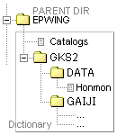

Readme
[2 4 6 8]
JIS補助漢字16 2005.08.01
(JIS X 0212-1990) Ver. 0.2
Code of the supplementary Japanese graphic character set for information interchange
JIS X 0212-1990(「情報交換用漢字符号−補助漢字」)は、1990年に制定された 6,067字(漢字5,801、非漢字266字)の文字表で、一般に「JIS補助漢字」と呼ばれる。
0. 辞書のインストール
圧縮ファイル内の、EPWING ディレクトリ以下全体を、任意のフォルダ／ディレクトリ下に、内部のサブディレクトリ構造を保ったまま展開する。

1. 元データ [↑]
http://kanji.zinbun.kyoto-u.ac.jp/~yasuoka/ftp/fonts/
・16x16ドット:
jisksp16-1990.bdf.Z
JIS X 0212-1990 Kanji Font, Version 0.983 (December 15, 1998)
著作権・ライセンス：Public Domain (*1)
・40x40ドット:
jisksp40.bdf.Z
40x40 JIS Supplementary Kanji Font, Version 1.3 (April 1, 1998)
著作権・ライセンス：別項を参照 (*2)
・Unicode
Unihan database (*3)
2. EPWING形式への変換 [↑]
本ソフトウェアーで言う EPWING形式 とは、JIS X 4081-2002 (EPWING-V1.0 サブセット)形式のことを指す。データ変換には、以下を利用した。
EBStudio v1.66
http://www31.ocn.ne.jp/~h_ishida/
(Windows用、シェアウェアー)
3. 検索方法 [↑]
【前方／後方一致】
・Unicode16、区点、JISコード16、シフトJISコード16、諸橋大漢和辞典検字番号
・読み(訓・音)
＊誤りを多く含む(*3)ので、参考程度に留めること。
【メニュー】
・区点番号順配列表からの参照検索
・部首番号(康煕字典214部首配列準拠)からの参照検索
【複合】
・部首画数・番号、総画数
＊「画数」は準拠・出典(*3)により異なるので、その前後も調べるのが望ましい。
例：（DDwin の場合)
各漢字コードでの検索例(里見【弴】、森【鷗】外)
・Unicode16 (5F34) そのまま/U ⇒ 5F34 U9dd7
・区点 (2877) K/k を付加 ⇒ K2877 k7631
・JIS16 (3C6D) J/j を付加 ⇒ J3C6D j6c3f
・シフトJIS16(8EEB) S/s を付加 ⇒ S8EEB se6bd
・諸橋大漢和(9808) M/m を付加 ⇒ M9808 m47268
4. 動作確認 [↑]
OS:
Windows 2000 Professional
Windows 98
EPWINGビューアー:
DDwin v2.66
5. 推奨のEPWINGビューアー [↑]
DDwin v2.66
http://homepage2.nifty.com/ddwin/
(Windows用、フリーウェアー)
6. 著作権とライセンス [↑]
本ソフトウェア(JIS X 4081 形式)の著作権は、元データの作成者に帰属します。また、本ソフトウェアは、自由に使用し、改編・再配布・再転載可能（但し、制限の有る場合*2を除く）ですが、無償で且つ非営利目的の場合に限ります。
7. 無保証・免責 [↑]
本ソフトウェア(JIS X 4081 形式)は、現状のままで提供され、明示されているか否かを問わず、特定の用途に対する適合性や、他人の権利を侵害しないこと等を含めて、如何なる保証もありません。
使用者は、自己の責任において本ソフトウェアを使用しなければなりません。その結果、一次的・二次的、または付随的・間接的な損害が万一発生したとしても、あるいは、機会損失や逸失利益、もしくはその他の如何なる損失があったとしても、使用者はそれらに対する賠償及び責任を一切問わないこととし、これに同意した上でのみ、使用するものとします。
8. 履歴 [↑]
Ver. Date 内容・改変
── ───── ───────────────
0.2 2005.08.01 40x40 イメージ、部首検索追加
0.12 2004.02.26 全文字 .bmp (16x16) 同梱
0.11 01.18 メニュー検索／77区(60-67点)のリンク修正
0.1 01.12 初版・公開
9. 改変者
Maximilk
http://hp.vector.co.jp/authors/VA037273/
(*1)
16x16 JIS X 0212-1990 Kanji Font, Version 0.983 (December 15, 1998)
JISX9051-based design by
Koichi Yasuoka <yasuoka@kudpc.kyoto-u.ac.jp>
KANOU Hiroki <g92k0323@cfi.waseda.ac.jp>
ITO Takayuki <yuki@is.s.u-tokyo.ac.jp>
Toshiyuki Imamura <imamura@kuamp.kyoto-u.ac.jp>
Ken'ichi Nakata <nakata@kuamp.kyoto-u.ac.jp>
SUNAGAWA Keiki <kei@ocean.ie.u-ryukyu.ac.jp>
COPYRIGHT "Public Domain"
(*2)
40x40 JIS Supplementary Kanji Font, Version 1.3 (April 1, 1998), made of Adobe-NewCenturySchoolbook, Adobe-Symbol, and CBS-CNS fonts
Rearranged and modified by Koichi Yasuoka <yasuoka@kudpc.kyoto-u.ac.jp>
All Kanji characters are in Taiwan-standard-glyph style, so they are far from Japanese Heisei-Mincho style.
COPYRIGHT "Adobe Systems Incorporated; Linotype; Central Bureau of Standards, Ministry of Economy, ROC"
Permission to use, copy, modify, and distribute this software and its documentation for any purpose and without fee is hereby granted, provided that the above copyright notices appear in all copies and that both those copyright notices and this permission notice appear in supporting documentation, and that the names of Adobe Systems, Linotype, and CBS not be used in advertising or publicity pertaining to distribution of the software without specific, written prior permission.
(*3)
Name: Unihan database
Unicode version: 4.0.1
Table version: 1.1
Date: 31 October 2003
Copyright: (c) 1996-2003 Unicode, Inc. All Rights reserved.
Source: ftp://ftp.unicode.org/Public/UNIDATA/
[↑]